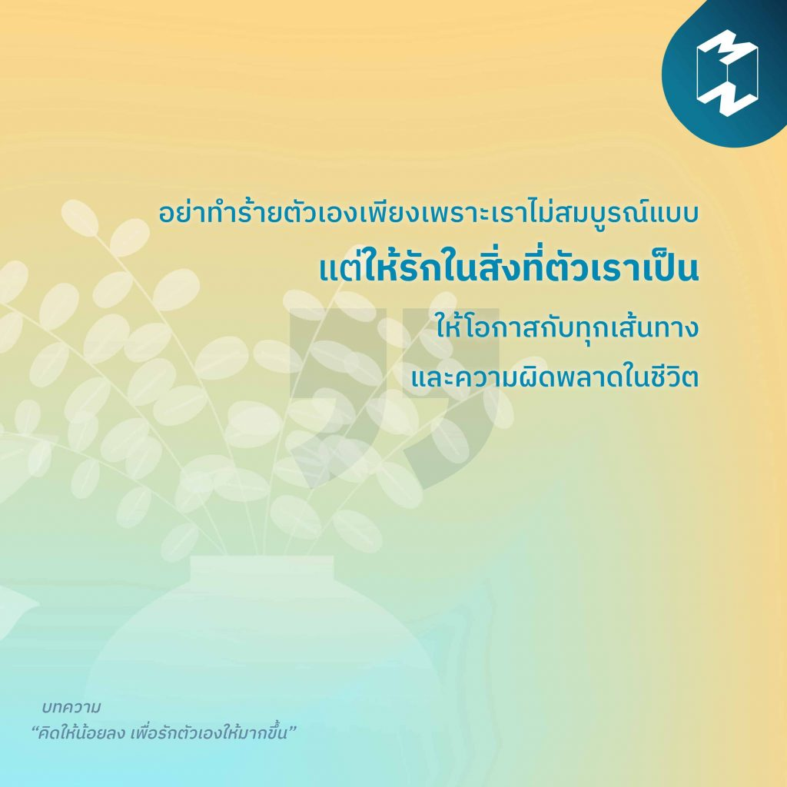

7)“คิดให้น้อยลง เพื่อรักตัวเองให้มากขึ้น”
“อย่าทำร้ายตัวเองเพียงเพราะเราไม่สมบูรณ์แบบ แต่ให้รักในสิ่งที่เราเป็น ให้โอกาสกับทุกเส้นทางและความผิดพลาดในชีวิต” หากปีที่ผ่านมาเสียเวลาไปกับความเครียดและความคิดมาก ปีนี้ลองปล่อยวางแล้วมาเริ่มกันใหม่ เรียนรู้ที่จะรักตัวเองให้มากขึ้น ทำงานได้อย่างมีประสิทธิภาพมากขึ้น และใช้ชีวิตได้อย่างคุ้มค่ามากขึ้น ผ่าน 5 เทคนิค ฝึกสมองให้ “คิดอย่างเป็นระบบ”